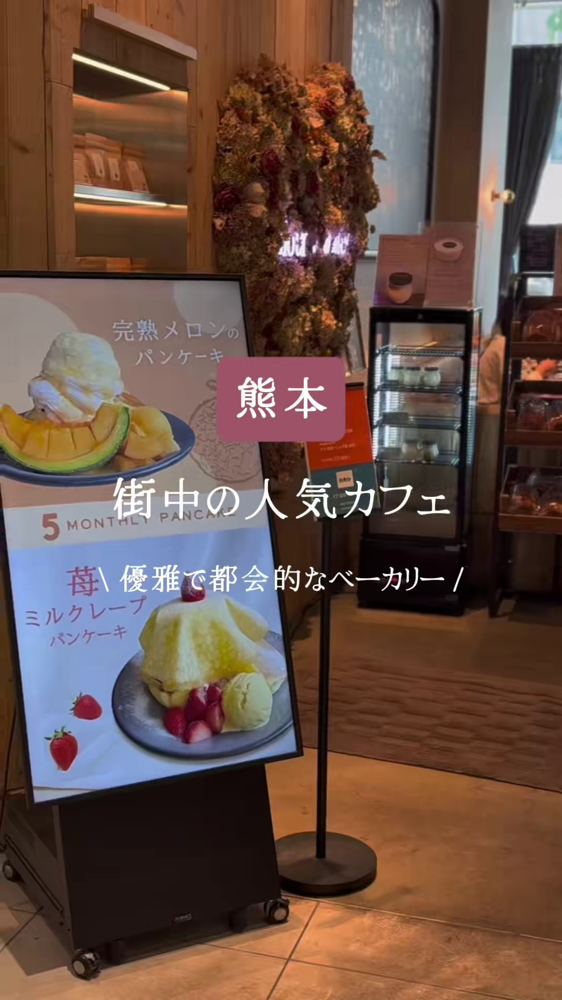
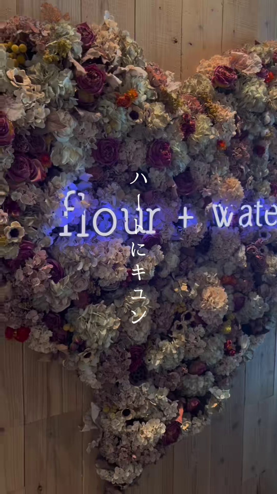
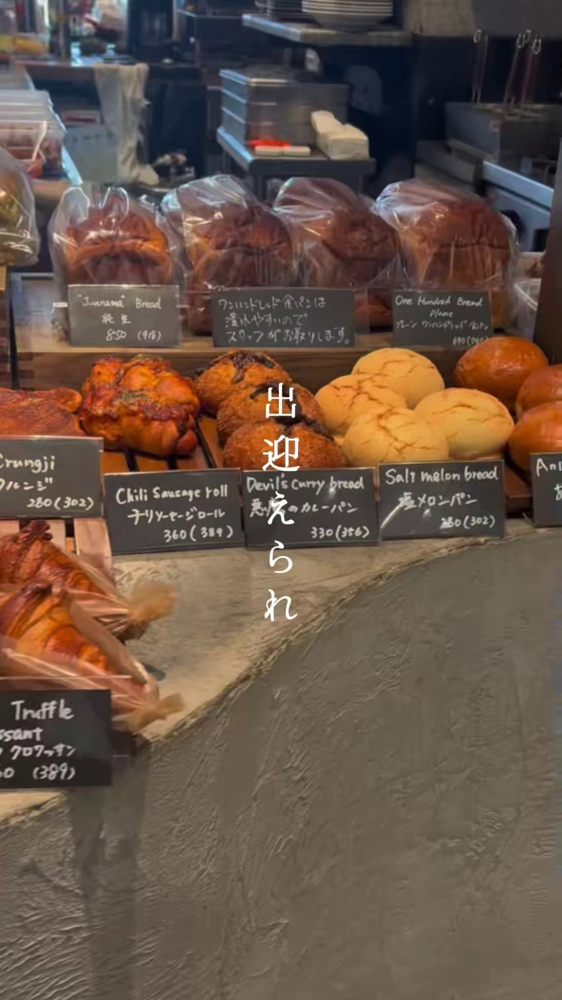
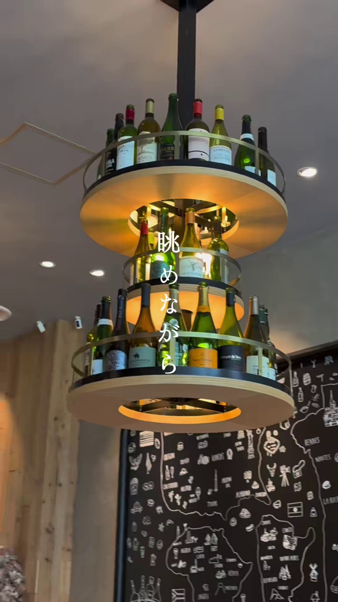
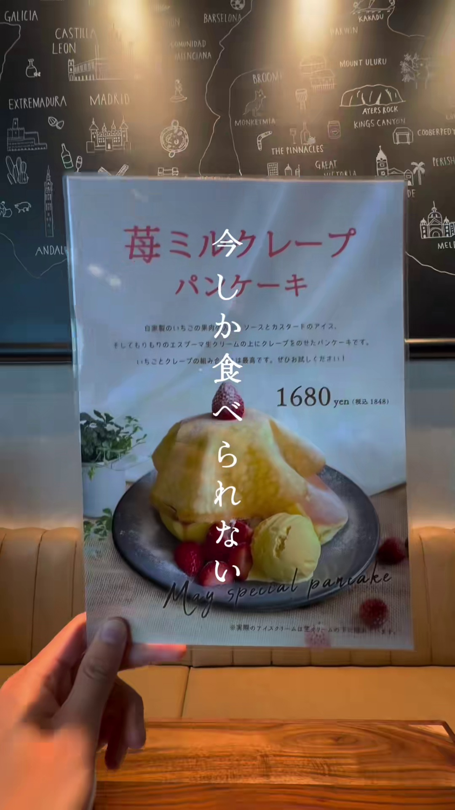
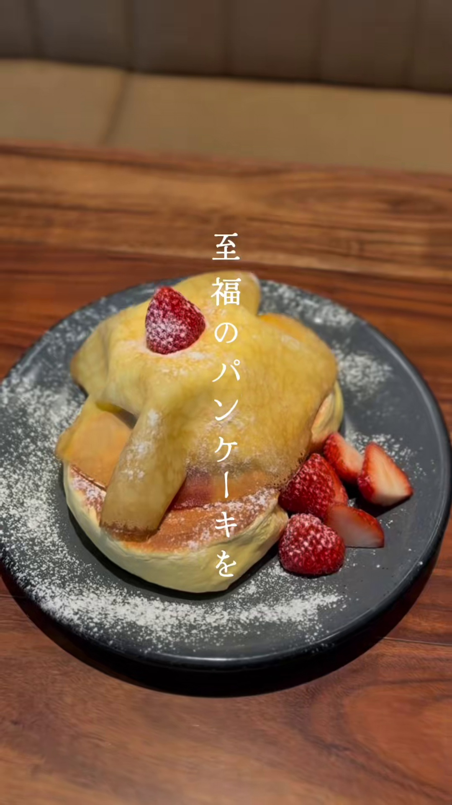
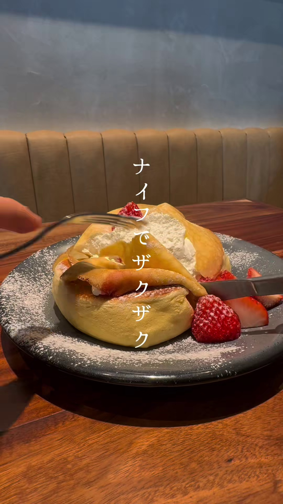
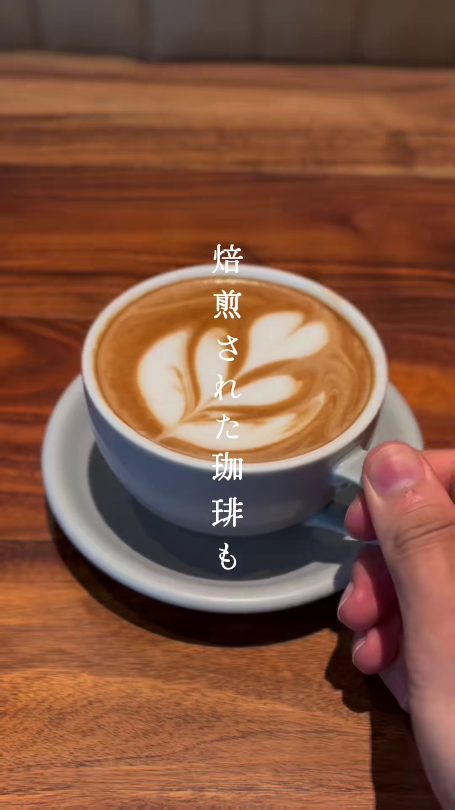
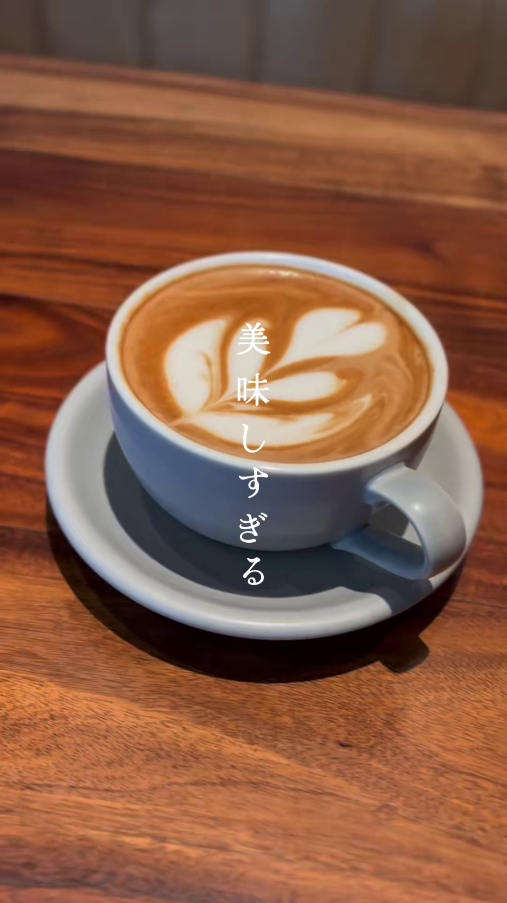
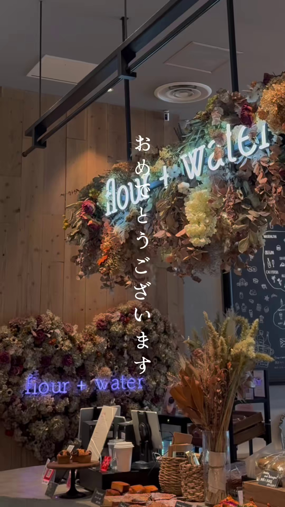

flour + water
熊本市中央区手取本町にある「flour + water」は、東京・中目黒で人気を博したベーカリーカフェの系列店です。特にふわふわのスフレパンケーキや「天使のクロワッサン」が自慢です。街中の人気カフェとして、優雅で都会的な空間を提供しています。
基本情報:
- 住所: 熊本県熊本市中央区手取本町5-1 HAB@熊本1F
- 電話番号: 096-324-7730
- 営業時間: 9:00～17:00 (カフェタイム)
- 駐車場: 有
ギャラリー









